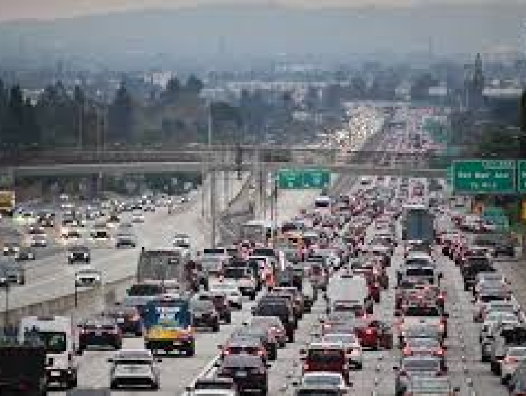

Car denpendency

Having car is often the main requirement for many people. most infrastructure is design mostly with car in main. this can make city hard to move around without a car.

we need to improve public transportation in in Los angeles.
Having car is often the main requirement for many people. most infrastructure is design mostly with car in main. this can make city hard to move around without a car.
Buying and maintaining a car is very expensive, and this can be a financial burden for people on low-income. In LA, Buying a car is becoming increasingly expensive. In California, a used car's average price was $34,617 in 2022. some families or people may not be able to afford a car, so they need public transit to move around.

Car produce green house emissions via exhaust. manufacturing car costs resources and produce emission in the process. Electric car would also have their own environmental costs. According to the EPA, a passenger vehicle produces 4.5 metric tons of annual emissions. This is much in place with many vehicles, especially in major cities like Los Angeles. Manufacturing a car costs resources and produces emissions in the process.

Public transportation is underfunded. public transit in many cities in the U.S. face funding deficits. this can led cut in services that public transit can provide.

People can travel travel more easily without of the use of a car.

Better transportation can provide better support for low-income families. they save on car repairs and refueling.

City being more walkable can improve public health. people can have more access to health services and health food

Fewer cars would lead to less green house emissions. According to the World Resources Institute, public transit, such as buses and trains, can reduce greenhouse gas by two-thirds compared to passenger vehicles.